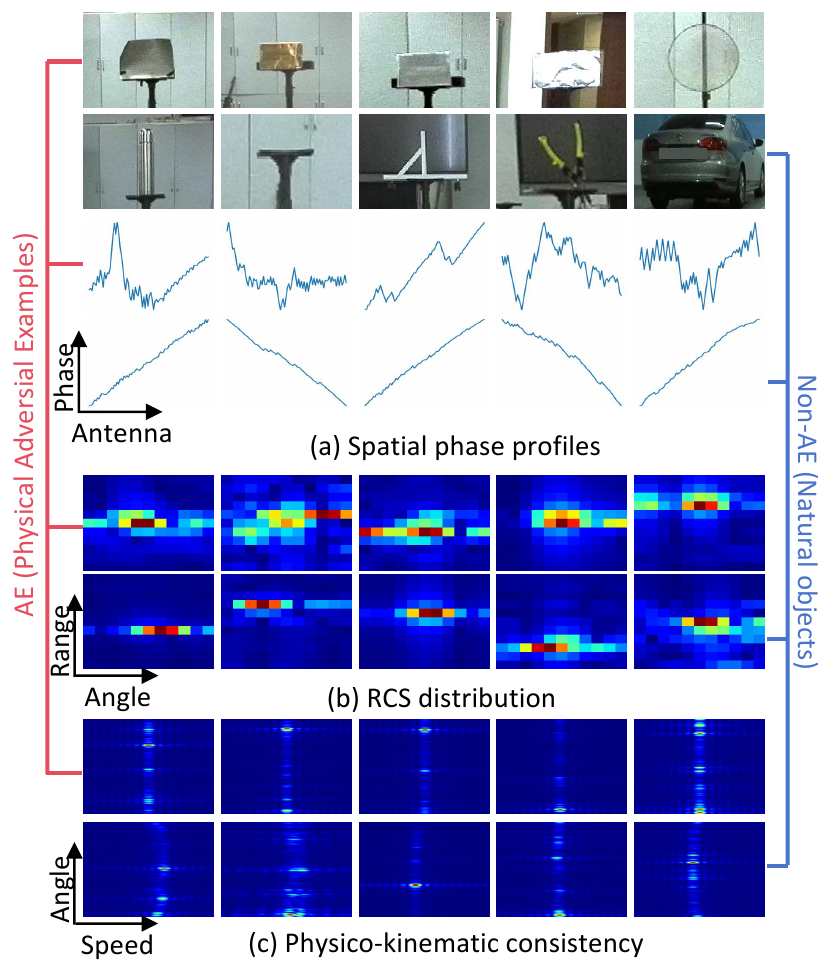
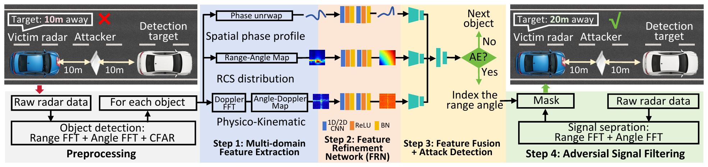
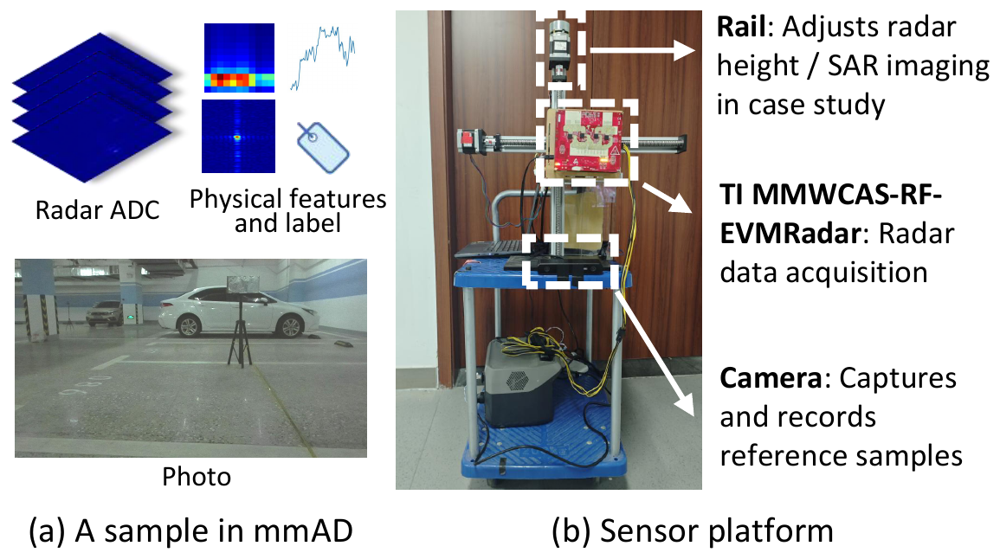
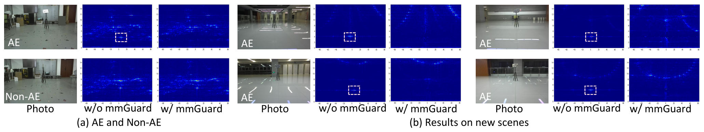

Physical adversarial attacks (PAAs) pose a serious security threat to millimeter-wave (mmWave) radar systems used in safety-critical applications such as autonomous driving and security checking. These attacks, manipulating radar signals via specially crafted materials, are proven feasible and can cause severe sensing failures; however, effective defenses remain unexplored due to the difficulty of distinguishing adversarial examples from normal environmental objects.
This paper presents mmGuard, a physics-based defense framework that addresses this challenge by exploiting a fundamental insight: the engineering process that makes materials adversarial inevitably creates detectable physical signatures. We identify three key domains where adversarial examples show artificial nature: spatial phase discontinuities, anomalous radar cross-section patterns, and violations of natural physico-kinematic relationships. mmGuard systematically captures these signatures through multi-domain feature extraction, enhances their discriminability via neural refinement, and enables efficient per-object attack detection and mitigation compatible with automotive radar update rates.
To enable evaluation, we introduce mmAD, comprising over 110,000 annotated radar frames with diverse adversarial examples across realistic deployment scenarios. Experimental results demonstrate that mmGuard achieves over 90% detection accuracy while exhibiting strong in-distribution performance, with few-shot adaptation enabling calibration to unseen settings. Case studies further validate that mmGuard can reliably defend against PAAs in real-world settings.
PAAs can mimic legitimate radar returns at the basic signal level, but a wave–matter interaction analysis reveals fingerprints they cannot hide.

Engineered surface structures introduce jagged or discontinuous spatial phase profiles across the antenna array, in contrast to the smooth phase fronts of natural objects.
Sub-wavelength unit cells tuned to a narrow resonance produce concentrated or artificially uniform energy in the range–angle domain, unlike the varied scattering of genuine targets.
Rigid passive reflectors lack the micro-motion of real objects, so adversarial returns collapse onto a sharp zero-velocity line spanning a wide angular range.
A physics-driven, three-stage pipeline that turns the fingerprints above into a reliable per-object decision and a filtered radar cube.

Acquired with a custom 12×16 MIMO platform (TI MMWCAS-RF-EVM, 77–81 GHz) on a motorized rail. Provides raw ADC, range–Doppler–angle cubes, and per-object physical features — with scene photographs as ground truth.

| Sub-dataset | Frames (AE / NAE) | Adv. Labels | Primary contribution |
|---|---|---|---|
| MPC — Material Property Characterization | ~40k / ~20k | ✓ | In-depth study of material reflection characteristics under varied incident angles, distances, and motion patterns. |
| AS — Application Scenarios | ~5k / ~5k | ✓ | Performance evaluation in complex, realistic automotive and security-screening scenes. |
| Enhanced Non-AE | — / ~40k | N/A | Broadens benign diversity (sourced from ColoRadar) to learn a stable natural-clutter boundary. |
mmGuard consistently outperforms four baselines (RF Fingerprinting, end-to-end ResNet-50, RF–DL hybrid, AutoEncoder anomaly detector) across reflective, absorbing, and polarized adversarial materials.

If you find mmGuard or mmAD useful in your research, please cite:
@article{geng2026mmguard,
author = {Geng, Ruixu and Zhang, Dongheng and Li, Yadong and Wang, Jianyang and
Liang, Qian and Zhang, Rui and Xu, Xiaohan and Lu, Zhi and Hu, Yang and Chen, Yan},
title = {{mmGuard}: A Countermeasure against Physical Adversarial Attacks on mmWave Radar Sensing},
journal = {IEEE Transactions on Information Forensics and Security},
year = {2026},
note = {To appear}
}